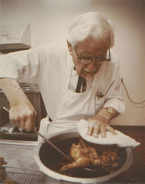
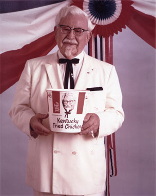

About
-
Lịch sử hình thành
Gà rán Kentucky (KFC), nhãn hiệu được tiên phong bởi ông Harland Sanders, đã phát triển và trở thành một trong những hệ thống phục vụ thức ăn nhanh lớn nhất trên thế giới, với hơn 1 tỉ bữa ăn tối KFC được phục vụ hàng năm trên hơn 80 quốc gia khác nhau. Nhưng để có được thành công như vậy thì không phải dễ dàng.
 -
Năm 1896
Thân phụ của ông Harland qua đời nên người mẹ phải lao động để trang trải cho gia đình. Vào cái tuổi lên 6, cậu bé Harland đã phải lo lắng việc chăm sóc cho các em nhỏ của mình và làm rất nhiều công việc bếp núc.
Một năm sau đó cậu đã thành thạo một vài món ăn địa phương. Trong suốt 30 năm sau, Sanders đã trải qua rất nhiều công việc khác nhau, từ người điều khiển giao thông đến nhân viên đại lý bảo hiểm, nhưng trong suốt thời gian này, trình độ nấu ăn của ông vẫn không hề thay đổi. -
Vào thập niên 30
Sanders khởi đầu sự nghiệp bằng việc chế biến gà rán phục vụ cho hành khách dừng chân ở trạm xăng nơi ông đang làm việc tại Corbin, bang Kentucky. Vì lúc ấy ông chưa có nhà hàng nên những vị khách phải ăn trên những chiếc bàn đặt tại trạm xăng của khu phố nhỏ bé. Sau đó ông lại tạo ra một món ăn gọi là “món thay thế bữa ăn ở nhà” để bán cho những gia đình bận rộn. Ông gọi nó là “Buổi ăn tối ngày chủ nhật, bảy ngày trong một tuần”.
-
Năm 1935
Để ghi nhận những đóng góp của ông cho nghệ thuật ẩm thực của bang Kentucky, Thống đốc bang đã phong tặng ông tước hiệu "Kentucky Colonel" - Đại tá danh dự bang Kentucky.
Bốn năm sau, những thiết lập ban đầu của ông đã được liệt kê trong danh sách Duncan Hines “Khám phá những món ăn ngon”
Khi mà nhu cầu và những đòi hỏi khắt khe của người tiêu dùng về thức ăn lên cao, ông ấy đã di chuyển nhiều nơi nhằm nâng cao năng suất của mình. Trong một thập kỷ sau, ông đã thành công với công thức pha chế bí mật của 11 loại hương vị và thảo mộc cùng với kỹ thuật nấu cơ bản mà vẫn được áp dụng đến ngày hôm nay.Năm 1955
Tự tin với chất lượng món gà rán của mình, ông đã tự phát triển và thành lập Doanh nghiệp nhượng quyền thương hiệu. Xấp xỉ 10 năm sau, Sanders đã có hơn 600 franchise ở Mỹ và ở Canada, và năm 1964 ông đã bán cổ phần 2 triệu đô của mình trong công ty Mỹ cho một nhóm các nhà đầu tư, trong đó có John Y. Brown JR, người sau này trở thành thống đốc bang Kentucky.
Dưới sự quản lý của người sở hữu mới, tập đoàn Gà Rán Kentucky đã phát triển một cách nhanh chóng. Công ty đã thực hiện cổ phần hóa ra công chúng vào năm 1966 và gia nhập thị trường chứng khoán New York vào năm 1969 và được mua lại bởi PepsiCo vào năm 1986. Đến năm 1997 PepsiCo đã chuyển hệ thống nhà hàng thức ăn nhanh, bao gồm cả nhãn hiệu KFC, sang một công ty về nhà hàng độc lập, gọi là Tricon Global Restaurant. Ngày nay, Công ty Nhà hàng (hiện giờ được gọi là tập đoàn Yum!Brands) là tập đoàn lớn nhất thế giới về số lượng cửa hàng với gần 35,000 cửa hàng trên khắp 110 quốc qua. Năm 1980 Ông mất đi bởi sự tác động mạnh của bệnh bạch cầu ở độ tuổi 90, ông đã đi gần 250,000 dặm/năm để viếng thăm các nhà hàng KFC trên toàn thế giới.